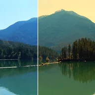

کلر ٹمپریچر

تصویر کو کیلون میں رنگ درجہ حرارت کی روشنی کی طرح گرم یا ٹھنڈا کرتا ہے؛ 6500 K پر یہ ویسی ہی رہتی ہے۔
تصویر کو گرم یا ٹھنڈا کرتا ہے، جیسے اسے کیلون میں دیے گئے رنگ کے درجہ حرارت والے لیمپ سے روشن کیا گیا ہو۔ Temperature 6500 K پر تصویر کو ویسا ہی رکھتا ہے۔ کم ویلیوز گرم، نارنجی شکل دیتی ہیں، اور زیادہ ویلیوز ٹھنڈی، نیلی شکل۔ Strength نتیجے کو اصل کے ساتھ ملا دیتا ہے۔
سیٹنگز
| سیٹنگ | قسم | رینج | ڈیفالٹ |
|---|---|---|---|
| ٹمپریچر | نمبر | 1000 سے 40000 تک | 3200 |
| شدت | نمبر | 0 سے 1 تک | 1 |